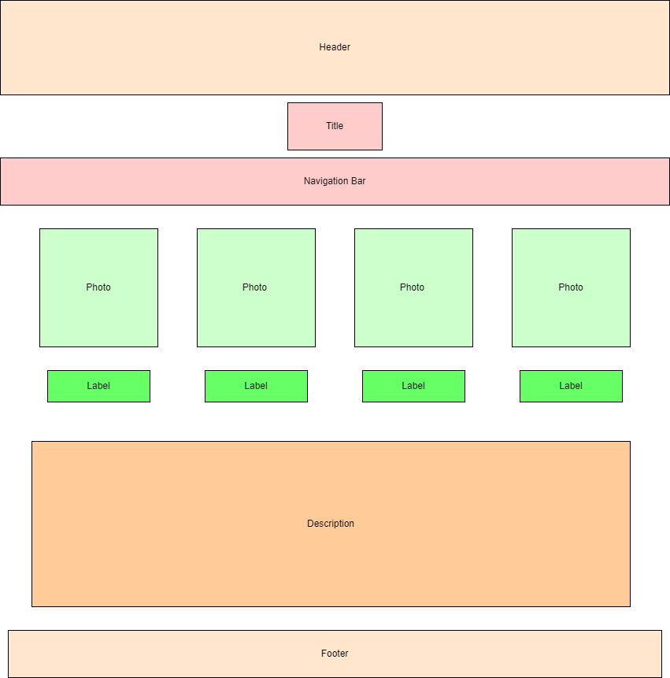
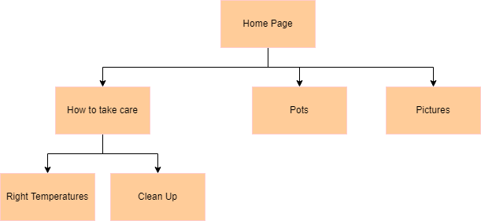

Project Design
Project overview:
Application and Purpose:
Intended Users:
Overview of Content:
Client Information
Name: Cindy Yang
Affiliations: None
Email: [private]
Phone Number: [private]

Design of the page

Sitemap of the website
Page Designs
Homepage
Purpose: Briefly goes over what succulent plants areAudience: People interested in succulent plantsContent: Photos of succlent plants and a description of itData Entry: NoneLinks and Inputs: Links to the other websites if interested in more informationButtons/Hyperlinks/Drop downs: None Actions: Links that go to other pagesSpecial Notes: None
Taking Care
Purpose: Helps people figuring out what water amounts and soils each plant needsAudience: People who need help in taking care of the plantContent: Information on how to take care of succulent plantsData Entry: NoneLinks and Inputs: NoneButtons/Hyperlinks/Drop downs: None Actions: NoneSpecial Notes: None
Temperatures
Purpose: Informs people where to place the plantAudience: People who need help in taking care of the plantContent: Information on how to take care of succulent plantsData Entry: NoneLinks and Inputs: NoneButtons/Hyperlinks/Drop downs: None Actions: NoneSpecial Notes: None
Clean Up
Purpose: Informs people on how to take care of the dead parts that may appearAudience: People who need help in taking care of the plantContent: What tools can be used to remove dead leaves and such Data Entry: NoneLinks and Inputs: NoneButtons/Hyperlinks/Drop downs: None Actions: NoneSpecial Notes: None
Pots
Purpose: Shows different sizes of pots to place succulent plants inAudience: Anyone who likes looking at potsContent: Different potsData Entry: NoneLinks and Inputs: NoneButtons/Hyperlinks/Drop downs: None Actions: NoneSpecial Notes: None
Pictures
Purpose: To show people pictures of succulent plantsAudience: Anyone interested in succulent plantsContent: Images of succulent plantsData Entry: NoneLinks and Inputs: NoneButtons/Hyperlinks/Drop downs: None Actions: NoneSpecial Notes: None
Dynamic Functionality
The homepage will have side by side images in the homepage
here.